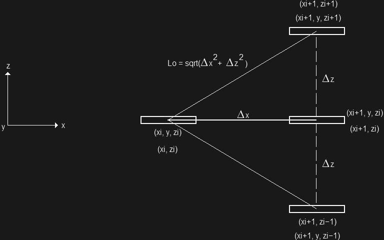
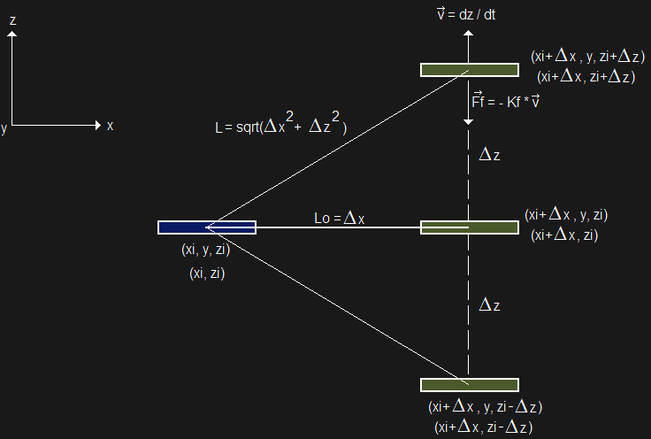

This simulation models a bridge as a series of interconnected plates linked by springs, following the principles of Hooke's Law. Each plate represents a section of the bridge, while the springs simulate the forces that keep the structure stable under different loads and displacements.
Here is a simplification of the model describing the behavior of two connected plates:

Diagram 1
Notice how we illustrate the same plate above, at the same level, and below the plate to its left.
The restoring force in each spring is given by Hooke's Law:
Where \(F\) is the force exerted by the spring, \(k\) is the spring constant, and \(x\) is the displacement from the spring’s natural length.
The length of each spring is determined by the positions of the plates it connects.
Also, according to Hooke's law, displacement (\(x\)) is usually defined as follows:
represents the length of the spring when it is stretched. This is the measurement of the spring after it has been extended from its natural resting position, indicating the force applied to elongate it.
is the natural or resting length of the spring, which is the length it assumes when no external forces are applied. This is the length of the spring at equilibrium, where it is neither stretched nor compressed.
By simulating the forces acting on each plate, we can analyze how the bridge responds to external forces such as weight, wind, and vibrations, helping to understand its structural integrity.
Here is a slightly more detailed diagram of the forces involved between two interconnected plates:

Diagram 2
From the diagram above, using the Pythagoras theorem, we can find out some equations:
From Hooke's law:
From Newton's second law of motion:
In Hooke's Law, when the spring is stretched, the displacement \(x\) is positive, and the restoring force \(F\) is negative, acting in the opposite direction to return the spring to equilibrium.
Additionally, we express Hooke's Law in terms of the absolute lengths of the spring instead of displacement:
Notice how in Diagram 2, the plate moving up (or down) has a vector of speed, defined as \(\frac{dz}{dt}\), and there is also an opposing force defined by the air friction (\(K_f\)) multiplied by the speed (\(\frac{dz}{dt}\)).
The corner plates will have two neighbours, the border middle plates will have three, and the middle plates will have four. The following diagrams describe this behavior:
In the most complex scenario, a plate will have four neighbours, resulting in the following equation:
How do we translate all of this into code?
We need to initialize a few matrices so we create a simple function to do it:
We will also need the ability to multiply a matrix by a scalar:
Additionally, we will need the ability to add matrices:
For visualization purposes, we want to approximate the numeric values of a matrix:
We also need to debug the matrix (As we are currently doing):
Later when we have the results of each iteration, we want to have the ability to render each isometric plate:
Below you can see the simulation of the bridge running on an HTML canvas, rendered with an open source isometric engine (Hit: Open the browser's developer tools to see the matrices printed):
Check the source code of this simulation here
The old-fashioned paper will always beat anything, so I encourage you to attempt figuring out the balance equations like this:
{kind=link}
{kind=link}
{kind=link}
I want to express my gratitude to the creators of Isomer and KaTeX for their incredible work. Isomer makes visualizing elements in isometric projections easy, while KaTeX allows seamless rendering of mathematical equations directly in HTML. Finally, the authors of the dark theme for GitHub gists also deserve some recognition.